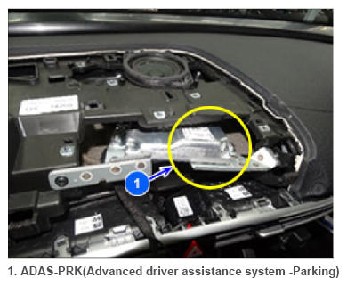

ADAS-PRK (Advanced driver assistance system - Parking)
 Courtesy of HYUNDAI MOTOR AMERICA
|
The ADAS_PRK detects a faulty component based on internal calculation and checksum values. In order to monitor and ensure the accuracy of the values calculated by the ADAS_PRK, the ADAS_PRK determines an error of the data based on the sum of all the values.